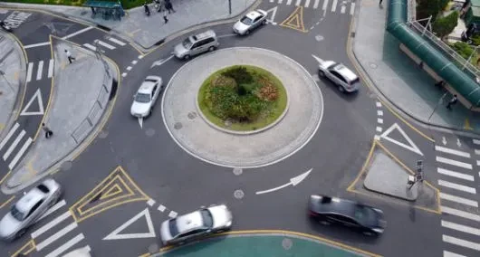

▲ 한국교통안전공단 조사에서 회전교차로 진입·진출 시 방향지시등을 모두 정확히 쓴 차량은 1.9%에 그쳤다
방향지시등, 이른바 '깜빡이'를 켜지 않고 운전하는 습관이 이제 범칙금을 넘어 벌점으로까지 이어질 전망입니다. 경찰청이 도로교통법 시행규칙 개정을 통해 방향지시등 미점등에 벌점 10점을 신설하는 방안을 추진 중이며, 8~9월 계도기간을 거쳐 10월부터는 현장 집중단속에 들어갑니다.
1. 98.1%라는 숫자는 어디서 나왔나

▲ 회전교차로는 진입 시 왼쪽, 진출 시 오른쪽 방향지시등을 각각 켜야 한다
한국교통안전공단이 전국 회전교차로를 통행하는 차량 1만 4,664대를 대상으로 실제 방향지시등 사용 행태를 조사했습니다. 그 결과 진입과 진출 과정에서 방향지시등을 모두 정확하게 사용한 차량은 단 1.9%에 불과했습니다. 나머지 98.1%는 진입 시, 진출 시, 혹은 둘 다 방향지시등을 켜지 않았다는 뜻입니다. 회전교차로는 일반 교차로와 달리 신호등이 없는 대신 방향지시등으로 다른 차량에 의사를 알려야 하는 구조라, 이 수치는 안전 문제로 직결됩니다.
2. 지금까지는 범칙금 3만 원짜리 '신호 불이행'
현행 도로교통법 제38조는 회전교차로를 포함한 진로 변경·회전 시 방향지시기 사용을 의무로 규정하고 있습니다. 다만 지금까지는 이를 어겨도 '신호 불이행'으로 분류돼 승용차·승합차 기준 범칙금 3만 원만 부과됐고, 벌점은 없었습니다. 상대적으로 가벼운 처벌 수준이 방향지시등 미사용이 관행처럼 굳어진 배경 중 하나로 지목됩니다.
3. 벌점 10점 신설 추진 — 절차는 어디까지 왔나
경찰청은 방향지시등 미점등에 범칙금과 별도로 벌점 10점을 추가하는 도로교통법 시행규칙 개정을 추진하고 있습니다. 이 개정안은 지난 7월 20일 국가경찰위원회 심의·의결을 통과했고, 현재는 입법예고 절차가 진행 중입니다. 다만 8월 현재까지는 아직 시행되지 않은 상태로, 실제 벌점 부과 시점은 입법예고 이후 확정될 예정입니다.
| 구분 | 현행 | 개정 추진안 |
|---|---|---|
| 범칙금(승용·승합차) | 3만 원 | 3만 원(유지) |
| 벌점 | 없음 | 10점 신설 |
| 법적 근거 | 도로교통법 제38조 | 동법 시행규칙 개정 |
| 절차 현황 | - | 국가경찰위원회 의결(7/20), 입법예고 중 |
4. 10월 집중단속, 회전교차로만이 아니다

▲ 10월 집중단속은 회전교차로뿐 아니라 일반 차선변경 시 방향지시등 미점등도 포함한다
10월 1일부터 연말까지 진행되는 현장 집중단속은 회전교차로에 국한되지 않습니다. 일반 도로에서 차선을 변경할 때 방향지시등을 켜지 않는 행위, 안전띠 미착용, 안전모 미착용까지 함께 단속 대상에 포함됩니다. 단속은 사고 다발 지점과 고속도로 진출입로를 중심으로 이뤄질 예정이며, 안전띠 착용 여부를 차량 전면 촬영으로 자동 판별하는 무인단속 장비도 개발 중입니다. 8~9월은 홍보·계도 기간으로 운영되고, 실제 현장단속은 10월부터 본격화됩니다.
5. 벤츠코리아도 가세한 '배려운전' 캠페인
이 흐름에는 완성차 업체도 동참하고 있습니다. 메르세데스-벤츠코리아 사회공헌위원회는 2014년부터 이어온 어린이 교통안전 프로그램 '모바일키즈'를 성인 운전자 대상으로 확대한 '배려운전' 캠페인을 진행 중입니다. 9월부터는 방향지시등 사용과 운전 중 스마트폰 사용 자제를 주제로 한 후속 캠페인이 예정돼 있어, 경찰의 계도기간과 시기가 정확히 맞물립니다. 캠페인은 전국 약 3만 2,000개 엘리베이터 스크린과 주요 역·휴게소, 티맵 내비게이션(일 약 10만 명 대상)을 통해 송출됩니다. 정부의 단속 강화와 민간 캠페인이 같은 시기에 함께 움직이는 흔치 않은 사례입니다.
6. 운전자가 지금 확인해야 할 것
벌점 신설 여부와 시행 시점은 아직 입법예고 단계라 유동적이지만, 8월 계도기간과 10월 집중단속이라는 정부 일정 자체는 이미 확정돼 있습니다. 평소 방향지시등 사용이 습관화되지 않았다면, 지금부터 미리 점검해두는 편이 좋습니다.